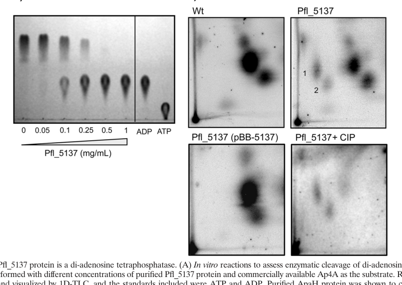

apaH encodes a symmetrical bis(5'-nucleosyl)-tetraphosphatase that hydrolyzes diadenosine tetraphosphate to ADP.
| GO Term | Evidence | Action | Reason |
|---|---|---|---|
|
GO:0008803
bis(5'-nucleosyl)-tetraphosphatase (symmetrical) activity
|
IEA
GO_REF:0000120 |
ACCEPT |
Summary: The Ap4A hydrolase activity annotation matches the curated UniProt catalytic function.
Reason: UniProt assigns EC 3.6.1.41 and the Rhea reaction for hydrolysis of diadenosine tetraphosphate to ADP.
Supporting Evidence:
file:PSEPK/apaH/apaH-uniprot.txt
Hydrolyzes diadenosine 5',5'''-P1,P4-tetraphosphate to yield
file:PSEPK/apaH/apaH-uniprot.txt
Reaction=P(1),P(4)-bis(5'-adenosyl) tetraphosphate + H2O
file:PSEPK/apaH/apaH-goa.tsv
GO:0008803 bis(5'-nucleosyl)-tetraphosphatase
file:PSEPK/apaH/apaH-deep-research-falcon.md
**ApaH**: typically performs **symmetric cleavage** of Ap4A to generate **two ADP molecules**.
file:PSEPK/apaH/apaH-deep-research-falcon.md
The UniProt entry’s “symmetrical” bis(5′-nucleosyl)-tetraphosphatase assignment is consistent with the **ApaH family biochemical mode**.
|
|
GO:0016787
hydrolase activity
|
IEA
GO_REF:0000120 |
MARK AS OVER ANNOTATED |
Summary: Hydrolase activity is true but too generic for ApaH.
Reason: The specific bis(5'-nucleosyl)-tetraphosphatase activity captures the enzyme function, so the broad hydrolase parent should not be used as the informative annotation.
Supporting Evidence:
file:PSEPK/apaH/apaH-uniprot.txt
EC=3.6.1.41
file:PSEPK/apaH/apaH-goa.tsv
GO:0016787 hydrolase activity
file:PSEPK/apaH/apaH-deep-research-falcon.md
Bis(5′-nucleosyl)-tetraphosphatase (symmetrical) / Ap4A hydrolase (**EC 3.6.1.41**) catalyzing **Ap4A → ADP + ADP**.
|
|
GO:0015967
diadenosine tetraphosphate catabolic process
|
ISS
file:PSEPK/apaH/apaH-deep-research-falcon.md |
NEW |
Summary: Falcon deep research places ApaH in intracellular Ap4A/Ap4N homeostasis, where loss of the enzyme elevates intracellular Ap4A. This biological process is the direct counterpart of the symmetric Ap4A hydrolase activity but is absent from the GOA (MF-only IEA terms).
Reason: Adds the missing biological-process aspect for Ap4A breakdown, supported by ApaH-family evidence across Pseudomonas and E. coli.
Supporting Evidence:
file:PSEPK/apaH/apaH-deep-research-falcon.md
Intracellular Ap4A/Ap4N homeostasis; stress-responsive nucleotide signaling
file:PSEPK/apaH/apaH-deep-research-falcon.md
genetic loss of Ap4A degradation** (including **ΔapaH**) elevates intracellular Ap4A
|
|
GO:0005737
cytoplasm
|
ISS
file:PSEPK/apaH/apaH-deep-research-falcon.md |
NEW |
Summary: No GOA cellular-component annotation exists for apaH. ApaH acts on intracellular Ap4A pools and is inferred to function in the cytosol/cytoplasm. Falcon flags this as a best inference rather than a directly measured localization for KT2440.
Reason: Adds the missing cellular-component aspect; the cytoplasmic localization is an inference by homology from Pseudomonas studies of intracellular Ap4A pools.
Supporting Evidence:
file:PSEPK/apaH/apaH-deep-research-falcon.md
imply that ApaH functions primarily in the **cytosol**
file:PSEPK/apaH/apaH-deep-research-falcon.md
**Cytosolic** enzyme controlling **intracellular** Ap4A pools.
|
Q: Is ApaH activity in KT2440 regulated by stress conditions that alter intracellular Ap4A levels?
Experiment: Measure Ap4A and ADP levels in wild-type and apaH knockout strains under growth and stress conditions.
Type: targeted nucleotide metabolite profiling
The research report should be a detailed narrative explaining the function, biological processes, and localization of the gene product. Citations should be given for all claims.
You should prioritize authoritative reviews and primary scientific literature when conducting research. You can supplement
this with annotations you find in gene/protein databases, but these can be outdated or inaccurate.
We are specifically interested in the primary function of the gene - for enzymes, what reaction is catalyzed, and what is the substrate specificity? For transporters, what is the substrate? For structural proteins or adapters, what is the broader structural role? For signaling molecules, what is the role in the pathway.
We are interested in where in or outside the cell the gene product carries out its function.
We are also interested in the signaling or biochemical pathways in which the gene functions. We are less interested in broad pleiotropic effects, except where these elucidate the precise role.
Include evidence where possible. We are interested in both experimental evidence as well as inference from structure, evolution, or bioinformatic analysis. Precise studies should be prioritized over high-throughput, where available.
Target entity: UniProt Q88QT8, gene apaH, ordered locus PP_0399, organism Pseudomonas putida KT2440.
Evidence base actually retrieved: I did not retrieve primary literature that experimentally characterizes PP_0399/Q88QT8 in P. putida KT2440 specifically. Therefore, this report annotates Q88QT8 by (i) functional congruence with the bacterial ApaH family and (ii) strong experimental evidence from close Proteobacteria (notably Pseudomonas aeruginosa and Pseudomonas fluorescens), while explicitly labeling organism-specific claims as inference-by-homology.
Match to UniProt description: In bacteria, ApaH is consistently described as a major Ap4A hydrolase (EC 3.6.1.41) in gamma-/betaproteobacteria that symmetrically hydrolyzes Ap4A to yield 2 ADP, matching the UniProt “bis(5′-nucleosyl)-tetraphosphatase, symmetrical / Ap4A hydrolase” description for Q88QT8. (zegarra2023themysteriousdiadenosine pages 3-4, minazzato2020functionalcharacterizationof pages 2-3, minazzato2020functionalcharacterizationof pages 1-2)
Diadenosine tetraphosphate (Ap4A; AppppA) is a dinucleoside polyphosphate present across life. In bacteria, Ap4A levels often increase under environmental/chemical stress, and Ap4A is increasingly framed as a stress-responsive regulatory nucleotide (“alarmone”/second messenger) rather than merely a damage byproduct. (zegarra2023themysteriousdiadenosine pages 3-4, young2024fromdustyshelves pages 1-3)
A dominant route of Ap4A formation in bacteria is non-canonical synthesis by aminoacyl‑tRNA synthetases (aaRSs) as a side reaction. (minazzato2020functionalcharacterizationof pages 1-2, zegarra2023themysteriousdiadenosine pages 3-4, young2024fromdustyshelves pages 1-3)
Bacterial Ap4A-degrading enzymes include ApaH, Nudix hydrolases (e.g., RppH in E. coli), and additional families (e.g., HD-domain enzymes such as YqeK/COG1713 in some organisms). (young2024fromdustyshelves pages 1-3)
Key functional distinction:
- ApaH: typically performs symmetric cleavage of Ap4A to generate two ADP molecules. (minazzato2020functionalcharacterizationof pages 2-3, minazzato2020functionalcharacterizationof pages 1-2, zegarra2023themysteriousdiadenosine pages 3-4)
- Nudix hydrolases: often cleave Ap4A asymmetrically to AMP + ATP. (zegarra2023themysteriousdiadenosine pages 3-4, minazzato2020functionalcharacterizationof pages 2-3)
Implication for Q88QT8: The UniProt entry’s “symmetrical” bis(5′-nucleosyl)-tetraphosphatase assignment is consistent with the ApaH family biochemical mode. (zegarra2023themysteriousdiadenosine pages 3-4, minazzato2020functionalcharacterizationof pages 2-3, minazzato2020functionalcharacterizationof pages 1-2)
Across bacteria, genetic loss of Ap4A degradation (including ΔapaH) elevates intracellular Ap4A and is associated with pleiotropic phenotypes (biofilm changes, motility, stress sensitivity, virulence changes, altered antibiotic tolerance). (minazzato2020functionalcharacterizationof pages 1-2, young2024fromdustyshelves pages 1-3, zegarra2023themysteriousdiadenosine pages 3-4)
Enzyme activity (family-supported): diadenosine tetraphosphate hydrolase (Ap4A hydrolase) catalyzing symmetric hydrolysis:
Ap4A + H2O → ADP + ADP (symmetric cleavage)
This reaction scheme is explicitly supported for bacterial ApaH enzymes in gamma-/betaproteobacteria in reviews and experimental syntheses, and is consistent with metabolic shifts observed when apaH is deleted (e.g., ADP changes in P. aeruginosa). (minazzato2020functionalcharacterizationof pages 2-3, minazzato2020functionalcharacterizationof pages 1-2, cervoni2024thediadenosinetetraphosphate pages 4-6)
Substrate scope: ApaH is commonly described as acting on Ap4N family dinucleoside polyphosphates (e.g., Ap4A and related species); in P. fluorescens, apaH deletion led to accumulation of species consistent with Ap4A and Ap4G, supporting broader dinucleoside tetraphosphate substrate specificity in vivo. (monds2010diadenosinetetraphosphate(ap4a) pages 5-7)
The most defensible pathway-level placement is:
- Dinucleoside polyphosphate (Ap4A/Ap4N) metabolism and stress-responsive nucleotide signaling (Ap4A “alarmone” concept). (zegarra2023themysteriousdiadenosine pages 3-4, young2024fromdustyshelves pages 1-3)
- Coupling to purine/nucleotide pool balance, sometimes impacting GTP and downstream signaling (e.g., c-di-GMP). (monds2010diadenosinetetraphosphate(ap4a) pages 10-11, young2024fromdustyshelves pages 5-6)
In Pseudomonas spp., experimental data demonstrate that perturbing ApaH can couple Ap4A metabolism to:
- c-di-GMP-associated biofilm regulation in P. fluorescens (increased c-di-GMP and biofilm upon apaH loss). (monds2010diadenosinetetraphosphate(ap4a) pages 10-11, monds2010diadenosinetetraphosphate(ap4a) pages 8-9)
- Virulence factor expression and infectivity in P. aeruginosa (broad virulence gene downregulation and reduced infectivity upon apaH loss). (cervoni2024thediadenosinetetraphosphate pages 4-6, cervoni2024thediadenosinetetraphosphate pages 10-12)
No retrieved text directly reports the subcellular localization of ApaH in P. putida KT2440.
However, the observed phenotypes and molecular roles (control of intracellular Ap4A pools; impacts on intracellular metabolites and global gene expression) imply that ApaH functions primarily in the cytosol. This is supported indirectly by studies quantifying intracellular Ap4A and nucleotide pools upon apaH deletion in Pseudomonas spp. (cervoni2024thediadenosinetetraphosphate pages 2-4, monds2010diadenosinetetraphosphate(ap4a) pages 10-11)
The following table summarizes the most directly quantitative evidence available from Pseudomonas spp. and E. coli that supports functional annotation of the ApaH family, which is the basis for annotating P. putida Q88QT8.
| Organism / strain | Perturbation | Ap4A change | Other metabolites | Phenotypes / quantitative outcomes | Methods | Source (year; DOI/URL) | Citation |
|---|---|---|---|---|---|---|---|
| Pseudomonas aeruginosa PAO1 | ΔapaH | ~25-fold intracellular Ap4A accumulation | ADP ↓ ~20%; ATP unchanged; c-di-GMP unchanged | Doubling time 37 → 40 min; earlier stationary phase; final cell density ~2.3-fold lower; no biofilm change; virulence genes broadly reduced | LC-MS/MS metabolite quantification; growth curves; RNA-seq | Cervoni et al., 2024; https://doi.org/10.1371/journal.ppat.1012486 | (cervoni2024thediadenosinetetraphosphate pages 2-4, cervoni2024thediadenosinetetraphosphate pages 4-6) |
| Pseudomonas aeruginosa clinical isolates / infection models | ΔapaH | Not separately quantified in these pages beyond pathway role | Not specified | Infectivity reduced in lettuce and Galleria mellonella; LD90 increased 1.4-fold to 30-fold depending on isolate; protease, elastase, pyoverdine reduced | Infection assays; virulence factor assays | Cervoni et al., 2024; https://doi.org/10.1371/journal.ppat.1012486 | (cervoni2024thediadenosinetetraphosphate pages 12-13, cervoni2024thediadenosinetetraphosphate pages 10-12) |
| Pseudomonas fluorescens | apaH null mutant | Ap4A undetectable in WT, strongly accumulated in mutant; LC-MS/MS reported at least 10^6-fold increase vs WT detection background; 2D-TLC also showed Ap4A/Ap4G accumulation | c-di-GMP ~10-fold higher; GTP ~3-fold higher | Biofilm ~2-fold higher under Pi-replete conditions; increased surface-associated LapA; Pho regulon induction impaired | LC-MS/MS; 2D-TLC with [32P]orthophosphate labeling; biofilm assays; reporter assays | Monds et al., 2010; https://doi.org/10.1128/JB.01571-09 | (monds2010diadenosinetetraphosphate(ap4a) pages 1-2, monds2010diadenosinetetraphosphate(ap4a) pages 10-11, monds2010diadenosinetetraphosphate(ap4a) pages 9-10, monds2010diadenosinetetraphosphate(ap4a) pages 8-9, monds2010diadenosinetetraphosphate(ap4a) pages 7-8, monds2010diadenosinetetraphosphate(ap4a) pages 5-7, monds2010diadenosinetetraphosphate(ap4a) media 824fb112) |
| Pseudomonas fluorescens | apaH null mutant | Elevated Ap4N species (Ap4A/Ap4G) vs undetectable WT | Not quantified in this row | Max growth rate similar (0.506 h^-1 WT vs 0.511 h^-1 mutant); lag time 1.0 h → 4.6 h; final yield ~48% of WT; increased heat/oxidative stress sensitivity; siderophore defect | Growth kinetics; stress assays; 2D-TLC | Monds et al., 2010; https://doi.org/10.1128/JB.01571-09 | (monds2010diadenosinetetraphosphate(ap4a) pages 5-7) |
| Escherichia coli K-12 / general apaH mutant literature | ΔapaH or apaH mutation | Basal Ap4A in WT ~1 µM (exponential) vs ~16 µM in ΔapaH exponential and ~100 µM in late exponential; older reports cite ~100-fold rise in steady-state Ap4A | Not specified in these summaries | Altered motility and catabolite repression; strong stress phenotypes reported in broader literature | Genetic deletion / metabolite measurements summarized in reviews | Young 2023 thesis; Despotović et al., 2017 review context; URLs not consistently available in extracted text | (young2023novelrolesof pages 26-33, monds2010diadenosinetetraphosphate(ap4a) pages 1-2) |
| Escherichia coli K-12 MG1655 under kanamycin | ΔapaH (Ap4A-elevated background) | Elevated Ap4A inferred from apaH deletion; lethal kanamycin reported elsewhere to raise Ap4A ~20-fold | Not specified quantitatively here | No baseline biofilm defect, but biofilm significantly reduced at kanamycin MIC 1.0728×10^-5 M; swarming motility reduced, swimming unchanged; QS/LPS genes reprogrammed | Ap4A affinity pull-down; MALDI-TOF/LC-MS proteomics; qRT-PCR; motility and biofilm assays | Ji et al., 2023; https://doi.org/10.1186/s12866-023-03113-3 | (ji2023diadenosinetetraphosphatemodulated pages 3-6, zegarra2023themysteriousdiadenosine pages 3-4, ji2023diadenosinetetraphosphatemodulated pages 1-3) |
| Escherichia coli stress-response literature | apaH mutant / ApaH overexpression | Ap4A accumulates under stress; kanamycin can raise Ap4A ~20-fold; basal WT reported 0.2–1 µM | Not specified | apaH mutants show ~100-fold decreased survival under kanamycin; ApaH overexpression promotes tolerance | Review synthesis of genetic and metabolite studies | Zegarra et al., 2023; https://doi.org/10.1093/femsml/uqad016 | (zegarra2023themysteriousdiadenosine pages 3-4) |
Table: This table compiles the strongest quantitative findings on apaH/ApaH disruption and Ap4A metabolism across Pseudomonas and E. coli, including metabolite shifts, phenotypes, and methods. It is useful for quickly separating well-supported species-specific observations from broader review-based inferences.
In P. fluorescens, loss of apaH produced extreme Ap4A accumulation (Ap4A undetectable in WT; mutant increased at least ~10^6-fold relative to WT detection background), and c-di-GMP increased ~10-fold with GTP increased ~3-fold (LC-MS/MS; multiple-comparison–corrected statistics). (monds2010diadenosinetetraphosphate(ap4a) pages 10-11, monds2010diadenosinetetraphosphate(ap4a) pages 9-10)
Biofilm formation increased ~2-fold, and changes were linked to the LapA adhesin and c-di-GMP signaling (LapA surface association higher in the apaH mutant). (monds2010diadenosinetetraphosphate(ap4a) pages 8-9)
Visual evidence: 2D-TLC and LC-MS/MS figures demonstrating Ap4A/Ap4G accumulation and nucleotide pool shifts were retrieved. (monds2010diadenosinetetraphosphate(ap4a) media 824fb112, monds2010diadenosinetetraphosphate(ap4a) media e299730a)
A 2024 P. aeruginosa study found that ΔapaH caused ~25-fold Ap4A accumulation and measurable growth effects (doubling time 37 → 40 min; stationary-phase yield ~2.3-fold lower). (cervoni2024thediadenosinetetraphosphate pages 2-4)
Transcriptomics revealed 1,280 differentially expressed genes (FC ±2, adjusted P<0.05), enriched for virulence-related and translation/ribosome functions, consistent with pleiotropic reprogramming when Ap4A is elevated. (cervoni2024thediadenosinetetraphosphate pages 4-6)
In vivo relevance: ΔapaH reduced infectivity in lettuce and Galleria mellonella models, with LD90 increases ranging from 1.4-fold to 30-fold depending on clinical isolate, supporting ApaH as a candidate antivirulence target. (cervoni2024thediadenosinetetraphosphate pages 10-12)
In E. coli treated with kanamycin, Ap4A-affinity and proteomics identified large sets of candidate Ap4A-associated proteins (e.g., 1,240 proteins detected overall, with 204 differential IDs), with enrichment in biofilm formation, quorum sensing, and LPS biosynthesis. (ji2023diadenosinetetraphosphatemodulated pages 3-6)
Using ΔapaH to elevate Ap4A, the authors observed pathway and phenotype shifts including reduced swarming motility and reduced biofilm under kanamycin at MIC (1.0728×10−5 M), and argued these effects may be exploitable for combination therapy concepts. (ji2023diadenosinetetraphosphatemodulated pages 3-6)
A 2023 review summarized bacterial Ap4A basal and stress-induced concentrations (examples: basal E. coli 0.2–1 µM; stress-exposed Salmonella reaching up to 365 µM under oxidative stress) and emphasized that in Gram-negative bacteria, ApaH performs symmetric Ap4A cleavage and is a major Ap4A homeostasis determinant. (zegarra2023themysteriousdiadenosine pages 3-4)
The same review highlighted emerging links between Ap4A and RNA metabolism, including Np4A-type 5′ caps that can stabilize transcripts, making ApaH relevant not only for metabolite clearance but also potentially for decapping and RNA stability regulation in bacteria. (zegarra2023themysteriousdiadenosine pages 3-4)
A 2024 Current Opinion in Microbiology review summarized work supporting Ap4A as an alarmone affecting proteostasis, including:
- Ap4A binding and inhibiting IMPDH (via CBS domains) with much higher affinity than ATP, remodeling purine biosynthesis to reduce GTP and translation during heat stress. (young2024fromdustyshelves pages 5-6)
- Detection of Np4-capped RNAs in E. coli during oxidative stress (reported range 4–76% capping among tested RNAs in stress), with ApaH and RppH implicated in decapping; ApaH is described as the major decapping enzyme. (young2024fromdustyshelves pages 5-6)
These developments expand the plausible biological role of ApaH-family enzymes beyond “housekeeping Ap4A hydrolase” to a node in stress-dependent RNA stability and translation/proteostasis regulation—a conceptual framework likely relevant to Proteobacteria including P. putida (inference-by-homology). (young2024fromdustyshelves pages 5-6, young2024fromdustyshelves pages 1-3)
The 2024 P. aeruginosa study explicitly frames ApaH as a potential antivirulence drug target, because ΔapaH reduces multiple virulence-associated outputs (proteases, siderophores, quorum-associated factors) and attenuates infection in non-mammalian models with substantial LD90 shifts. (cervoni2024thediadenosinetetraphosphate pages 10-12, cervoni2024thediadenosinetetraphosphate pages 2-4)
In P. fluorescens, apaH loss strongly increases Ap4A, increases c-di-GMP (~10×), and increases biofilm (~2×), linking Ap4A metabolism to c-di-GMP-dependent pathways and adhesin localization (LapA). This establishes a mechanistic precedent for manipulating Ap4A metabolism to modulate surface attachment and biofilms in related Pseudomonads (transfer to P. putida remains an inference). (monds2010diadenosinetetraphosphate(ap4a) pages 10-11, monds2010diadenosinetetraphosphate(ap4a) pages 8-9)
In E. coli, a 2023 study argues that Ap4A accumulation (via ΔapaH) can modulate quorum sensing and reduce biofilm under kanamycin, suggesting possible antibiotic combination/adjuvant strategies. (ji2023diadenosinetetraphosphatemodulated pages 3-6)
Importantly, P. aeruginosa results caution against assuming uniform antibiotic potentiation: ΔapaH did not produce major intrinsic antibiotic susceptibility changes in P. aeruginosa (disk diffusion) and showed only minor differences in time-kill curves, highlighting species- and context-dependence of Ap4A-based adjuvant strategies. (cervoni2024thediadenosinetetraphosphate pages 4-6)
The P. aeruginosa authors explicitly note ongoing debate on whether Ap4A is a damage metabolite or a true signaling alarmone, and their data support a signaling role insofar as ΔapaH-driven Ap4A accumulation produces coordinated transcriptome and virulence phenotypes. (cervoni2024thediadenosinetetraphosphate pages 2-4, cervoni2024thediadenosinetetraphosphate pages 4-6)
The 2024 review frames Ap4A as increasingly supported as an alarmone with direct protein targets and RNA-capping roles, tying Ap4A to global cellular homeostasis (proteostasis/RNA stability) rather than nonspecific damage. (young2024fromdustyshelves pages 5-6, young2024fromdustyshelves pages 1-3)
Across Pseudomonas species, ApaH perturbation yields different downstream behaviors: in P. fluorescens it strongly affects c-di-GMP and biofilm, whereas in P. aeruginosa ΔapaH does not measurably change c-di-GMP/biofilm but strongly impacts virulence programs and growth yield. This indicates that Ap4A homeostasis couples into different regulatory architectures across closely related bacteria. (cervoni2024thediadenosinetetraphosphate pages 2-4, monds2010diadenosinetetraphosphate(ap4a) pages 10-11)
Most defensible annotation (supported by enzyme family evidence):
- Molecular function: Bis(5′-nucleosyl)-tetraphosphatase (symmetrical) / Ap4A hydrolase (EC 3.6.1.41) catalyzing Ap4A → ADP + ADP. (minazzato2020functionalcharacterizationof pages 2-3, minazzato2020functionalcharacterizationof pages 1-2, zegarra2023themysteriousdiadenosine pages 3-4)
- Biological process: Intracellular Ap4A/Ap4N homeostasis; stress-responsive nucleotide signaling; potential roles in coordinating nucleotide pools with global gene regulation and (in some bacteria) RNA stability/decapping. (zegarra2023themysteriousdiadenosine pages 3-4, young2024fromdustyshelves pages 5-6)
- Cellular component (best inference): Cytosolic enzyme controlling intracellular Ap4A pools. (cervoni2024thediadenosinetetraphosphate pages 2-4, monds2010diadenosinetetraphosphate(ap4a) pages 10-11)
Caveat / evidence gap: No retrieved primary study directly measures enzyme kinetics, metal requirements, structural motifs, or knockout phenotype for Q88QT8/PP_0399 in P. putida KT2440; thus, pathway and phenotype expectations for KT2440 should be treated as hypotheses derived from Pseudomonas homolog data rather than confirmed facts.
References
(zegarra2023themysteriousdiadenosine pages 3-4): Victor Zegarra, Christopher-Nils Mais, Johannes Freitag, and Gert Bange. The mysterious diadenosine tetraphosphate (ap4a). microLife, Apr 2023. URL: https://doi.org/10.1093/femsml/uqad016, doi:10.1093/femsml/uqad016. This article has 16 citations and is from a peer-reviewed journal.
(minazzato2020functionalcharacterizationof pages 2-3): Gabriele Minazzato, Massimiliano Gasparrini, Adolfo Amici, Michele Cianci, Francesca Mazzola, Giuseppe Orsomando, Leonardo Sorci, and Nadia Raffaelli. Functional characterization of cog1713 (yqek) as a novel diadenosine tetraphosphate hydrolase family. Journal of Bacteriology, Apr 2020. URL: https://doi.org/10.1128/jb.00053-20, doi:10.1128/jb.00053-20. This article has 30 citations and is from a peer-reviewed journal.
(minazzato2020functionalcharacterizationof pages 1-2): Gabriele Minazzato, Massimiliano Gasparrini, Adolfo Amici, Michele Cianci, Francesca Mazzola, Giuseppe Orsomando, Leonardo Sorci, and Nadia Raffaelli. Functional characterization of cog1713 (yqek) as a novel diadenosine tetraphosphate hydrolase family. Journal of Bacteriology, Apr 2020. URL: https://doi.org/10.1128/jb.00053-20, doi:10.1128/jb.00053-20. This article has 30 citations and is from a peer-reviewed journal.
(young2024fromdustyshelves pages 1-3): Megan KM Young and Jue D Wang. From dusty shelves toward the spotlight: growing evidence for ap4a as an alarmone in maintaining rna stability and proteostasis. Current Opinion in Microbiology, 81:102536, Oct 2024. URL: https://doi.org/10.1016/j.mib.2024.102536, doi:10.1016/j.mib.2024.102536. This article has 9 citations and is from a peer-reviewed journal.
(cervoni2024thediadenosinetetraphosphate pages 4-6): Matteo Cervoni, Davide Sposato, Giulia Ferri, Heike Bähre, Livia Leoni, Giordano Rampioni, Paolo Visca, Antonio Recchiuti, and Francesco Imperi. The diadenosine tetraphosphate hydrolase apah contributes to pseudomonas aeruginosa pathogenicity. Aug 2024. URL: https://doi.org/10.1371/journal.ppat.1012486, doi:10.1371/journal.ppat.1012486. This article has 4 citations and is from a highest quality peer-reviewed journal.
(monds2010diadenosinetetraphosphate(ap4a) pages 5-7): Russell D. Monds, Peter D. Newell, Jeffrey C. Wagner, Julia A. Schwartzman, Wenyun Lu, Joshua D. Rabinowitz, and George A. O'Toole. Di-adenosine tetraphosphate (ap4a) metabolism impacts biofilm formation bypseudomonas fluorescensvia modulation of c-di-gmp-dependent pathways. Jun 2010. URL: https://doi.org/10.1128/jb.01571-09, doi:10.1128/jb.01571-09. This article has 84 citations and is from a peer-reviewed journal.
(monds2010diadenosinetetraphosphate(ap4a) pages 10-11): Russell D. Monds, Peter D. Newell, Jeffrey C. Wagner, Julia A. Schwartzman, Wenyun Lu, Joshua D. Rabinowitz, and George A. O'Toole. Di-adenosine tetraphosphate (ap4a) metabolism impacts biofilm formation bypseudomonas fluorescensvia modulation of c-di-gmp-dependent pathways. Jun 2010. URL: https://doi.org/10.1128/jb.01571-09, doi:10.1128/jb.01571-09. This article has 84 citations and is from a peer-reviewed journal.
(young2024fromdustyshelves pages 5-6): Megan KM Young and Jue D Wang. From dusty shelves toward the spotlight: growing evidence for ap4a as an alarmone in maintaining rna stability and proteostasis. Current Opinion in Microbiology, 81:102536, Oct 2024. URL: https://doi.org/10.1016/j.mib.2024.102536, doi:10.1016/j.mib.2024.102536. This article has 9 citations and is from a peer-reviewed journal.
(monds2010diadenosinetetraphosphate(ap4a) pages 8-9): Russell D. Monds, Peter D. Newell, Jeffrey C. Wagner, Julia A. Schwartzman, Wenyun Lu, Joshua D. Rabinowitz, and George A. O'Toole. Di-adenosine tetraphosphate (ap4a) metabolism impacts biofilm formation bypseudomonas fluorescensvia modulation of c-di-gmp-dependent pathways. Jun 2010. URL: https://doi.org/10.1128/jb.01571-09, doi:10.1128/jb.01571-09. This article has 84 citations and is from a peer-reviewed journal.
(cervoni2024thediadenosinetetraphosphate pages 10-12): Matteo Cervoni, Davide Sposato, Giulia Ferri, Heike Bähre, Livia Leoni, Giordano Rampioni, Paolo Visca, Antonio Recchiuti, and Francesco Imperi. The diadenosine tetraphosphate hydrolase apah contributes to pseudomonas aeruginosa pathogenicity. Aug 2024. URL: https://doi.org/10.1371/journal.ppat.1012486, doi:10.1371/journal.ppat.1012486. This article has 4 citations and is from a highest quality peer-reviewed journal.
(cervoni2024thediadenosinetetraphosphate pages 2-4): Matteo Cervoni, Davide Sposato, Giulia Ferri, Heike Bähre, Livia Leoni, Giordano Rampioni, Paolo Visca, Antonio Recchiuti, and Francesco Imperi. The diadenosine tetraphosphate hydrolase apah contributes to pseudomonas aeruginosa pathogenicity. Aug 2024. URL: https://doi.org/10.1371/journal.ppat.1012486, doi:10.1371/journal.ppat.1012486. This article has 4 citations and is from a highest quality peer-reviewed journal.
(cervoni2024thediadenosinetetraphosphate pages 12-13): Matteo Cervoni, Davide Sposato, Giulia Ferri, Heike Bähre, Livia Leoni, Giordano Rampioni, Paolo Visca, Antonio Recchiuti, and Francesco Imperi. The diadenosine tetraphosphate hydrolase apah contributes to pseudomonas aeruginosa pathogenicity. Aug 2024. URL: https://doi.org/10.1371/journal.ppat.1012486, doi:10.1371/journal.ppat.1012486. This article has 4 citations and is from a highest quality peer-reviewed journal.
(monds2010diadenosinetetraphosphate(ap4a) pages 1-2): Russell D. Monds, Peter D. Newell, Jeffrey C. Wagner, Julia A. Schwartzman, Wenyun Lu, Joshua D. Rabinowitz, and George A. O'Toole. Di-adenosine tetraphosphate (ap4a) metabolism impacts biofilm formation bypseudomonas fluorescensvia modulation of c-di-gmp-dependent pathways. Jun 2010. URL: https://doi.org/10.1128/jb.01571-09, doi:10.1128/jb.01571-09. This article has 84 citations and is from a peer-reviewed journal.
(monds2010diadenosinetetraphosphate(ap4a) pages 9-10): Russell D. Monds, Peter D. Newell, Jeffrey C. Wagner, Julia A. Schwartzman, Wenyun Lu, Joshua D. Rabinowitz, and George A. O'Toole. Di-adenosine tetraphosphate (ap4a) metabolism impacts biofilm formation bypseudomonas fluorescensvia modulation of c-di-gmp-dependent pathways. Jun 2010. URL: https://doi.org/10.1128/jb.01571-09, doi:10.1128/jb.01571-09. This article has 84 citations and is from a peer-reviewed journal.
(monds2010diadenosinetetraphosphate(ap4a) pages 7-8): Russell D. Monds, Peter D. Newell, Jeffrey C. Wagner, Julia A. Schwartzman, Wenyun Lu, Joshua D. Rabinowitz, and George A. O'Toole. Di-adenosine tetraphosphate (ap4a) metabolism impacts biofilm formation bypseudomonas fluorescensvia modulation of c-di-gmp-dependent pathways. Jun 2010. URL: https://doi.org/10.1128/jb.01571-09, doi:10.1128/jb.01571-09. This article has 84 citations and is from a peer-reviewed journal.
(monds2010diadenosinetetraphosphate(ap4a) media 824fb112): Russell D. Monds, Peter D. Newell, Jeffrey C. Wagner, Julia A. Schwartzman, Wenyun Lu, Joshua D. Rabinowitz, and George A. O'Toole. Di-adenosine tetraphosphate (ap4a) metabolism impacts biofilm formation bypseudomonas fluorescensvia modulation of c-di-gmp-dependent pathways. Jun 2010. URL: https://doi.org/10.1128/jb.01571-09, doi:10.1128/jb.01571-09. This article has 84 citations and is from a peer-reviewed journal.
(young2023novelrolesof pages 26-33): MKM Young. Novel roles of diadenosine tetraphosphate (appppa) as a signaling nucleotide in bacillus subtilis. Unknown journal, 2023.
(ji2023diadenosinetetraphosphatemodulated pages 3-6): Xia Ji, Ruojing Yu, Meilian Zhu, Cuilin Zhang, Libin Zhou, Tianshu Cai, and Weiwei Li. Diadenosine tetraphosphate modulated quorum sensing in bacteria treated with kanamycin. BMC Microbiology, Nov 2023. URL: https://doi.org/10.1186/s12866-023-03113-3, doi:10.1186/s12866-023-03113-3. This article has 5 citations and is from a peer-reviewed journal.
(ji2023diadenosinetetraphosphatemodulated pages 1-3): Xia Ji, Ruojing Yu, Meilian Zhu, Cuilin Zhang, Libin Zhou, Tianshu Cai, and Weiwei Li. Diadenosine tetraphosphate modulated quorum sensing in bacteria treated with kanamycin. BMC Microbiology, Nov 2023. URL: https://doi.org/10.1186/s12866-023-03113-3, doi:10.1186/s12866-023-03113-3. This article has 5 citations and is from a peer-reviewed journal.
(monds2010diadenosinetetraphosphate(ap4a) media e299730a): Russell D. Monds, Peter D. Newell, Jeffrey C. Wagner, Julia A. Schwartzman, Wenyun Lu, Joshua D. Rabinowitz, and George A. O'Toole. Di-adenosine tetraphosphate (ap4a) metabolism impacts biofilm formation bypseudomonas fluorescensvia modulation of c-di-gmp-dependent pathways. Jun 2010. URL: https://doi.org/10.1128/jb.01571-09, doi:10.1128/jb.01571-09. This article has 84 citations and is from a peer-reviewed journal.

id: Q88QT8
gene_symbol: apaH
product_type: PROTEIN
status: DRAFT
taxon:
id: NCBITaxon:160488
label: Pseudomonas putida (strain ATCC 47054 / DSM 6125 / CFBP 8728 / NCIMB 11950 / KT2440)
description: apaH encodes a symmetrical bis(5'-nucleosyl)-tetraphosphatase that hydrolyzes diadenosine tetraphosphate to ADP.
existing_annotations:
- term:
id: GO:0008803
label: bis(5'-nucleosyl)-tetraphosphatase (symmetrical) activity
evidence_type: IEA
original_reference_id: GO_REF:0000120
review:
summary: The Ap4A hydrolase activity annotation matches the curated UniProt catalytic function.
action: ACCEPT
reason: UniProt assigns EC 3.6.1.41 and the Rhea reaction for hydrolysis of diadenosine tetraphosphate to ADP.
supported_by:
- reference_id: file:PSEPK/apaH/apaH-uniprot.txt
supporting_text: Hydrolyzes diadenosine 5',5'''-P1,P4-tetraphosphate to yield
- reference_id: file:PSEPK/apaH/apaH-uniprot.txt
supporting_text: Reaction=P(1),P(4)-bis(5'-adenosyl) tetraphosphate + H2O
- reference_id: file:PSEPK/apaH/apaH-goa.tsv
supporting_text: "GO:0008803\tbis(5'-nucleosyl)-tetraphosphatase"
- reference_id: file:PSEPK/apaH/apaH-deep-research-falcon.md
supporting_text: |-
**ApaH**: typically performs **symmetric cleavage** of Ap4A to generate **two ADP molecules**.
- reference_id: file:PSEPK/apaH/apaH-deep-research-falcon.md
supporting_text: |-
The UniProt entry’s “symmetrical” bis(5′-nucleosyl)-tetraphosphatase assignment is consistent with the **ApaH family biochemical mode**.
- term:
id: GO:0016787
label: hydrolase activity
evidence_type: IEA
original_reference_id: GO_REF:0000120
review:
summary: Hydrolase activity is true but too generic for ApaH.
action: MARK_AS_OVER_ANNOTATED
reason: The specific bis(5'-nucleosyl)-tetraphosphatase activity captures the enzyme function, so the broad hydrolase parent should not be used as the informative annotation.
supported_by:
- reference_id: file:PSEPK/apaH/apaH-uniprot.txt
supporting_text: EC=3.6.1.41
- reference_id: file:PSEPK/apaH/apaH-goa.tsv
supporting_text: "GO:0016787\thydrolase activity"
- reference_id: file:PSEPK/apaH/apaH-deep-research-falcon.md
supporting_text: |-
Bis(5′-nucleosyl)-tetraphosphatase (symmetrical) / Ap4A hydrolase (**EC 3.6.1.41**) catalyzing **Ap4A → ADP + ADP**.
- term:
id: GO:0015967
label: diadenosine tetraphosphate catabolic process
evidence_type: ISS
original_reference_id: file:PSEPK/apaH/apaH-deep-research-falcon.md
review:
summary: Falcon deep research places ApaH in intracellular Ap4A/Ap4N homeostasis, where loss
of the enzyme elevates intracellular Ap4A. This biological process is the direct counterpart
of the symmetric Ap4A hydrolase activity but is absent from the GOA (MF-only IEA terms).
action: NEW
reason: Adds the missing biological-process aspect for Ap4A breakdown, supported by ApaH-family
evidence across Pseudomonas and E. coli.
supported_by:
- reference_id: file:PSEPK/apaH/apaH-deep-research-falcon.md
supporting_text: |-
Intracellular Ap4A/Ap4N homeostasis; stress-responsive nucleotide signaling
- reference_id: file:PSEPK/apaH/apaH-deep-research-falcon.md
supporting_text: |-
genetic loss of Ap4A degradation** (including **ΔapaH**) elevates intracellular Ap4A
- term:
id: GO:0005737
label: cytoplasm
evidence_type: ISS
original_reference_id: file:PSEPK/apaH/apaH-deep-research-falcon.md
review:
summary: No GOA cellular-component annotation exists for apaH. ApaH acts on intracellular Ap4A
pools and is inferred to function in the cytosol/cytoplasm. Falcon flags this as a best
inference rather than a directly measured localization for KT2440.
action: NEW
reason: Adds the missing cellular-component aspect; the cytoplasmic localization is an inference
by homology from Pseudomonas studies of intracellular Ap4A pools.
supported_by:
- reference_id: file:PSEPK/apaH/apaH-deep-research-falcon.md
supporting_text: |-
imply that ApaH functions primarily in the **cytosol**
- reference_id: file:PSEPK/apaH/apaH-deep-research-falcon.md
supporting_text: |-
**Cytosolic** enzyme controlling **intracellular** Ap4A pools.
references:
- id: GO_REF:0000120
title: Combined automated GO annotation using multiple IEA methods
findings:
- statement: Automated EC/Rhea/UniRule mapping supplies the specific Ap4A hydrolase activity and a broad hydrolase parent.
- id: file:PSEPK/apaH/apaH-uniprot.txt
title: UniProtKB reviewed entry for apaH
findings:
- statement: UniProt identifies ApaH as symmetrical bis(5'-nucleosyl)-tetraphosphatase, EC 3.6.1.41.
- id: file:PSEPK/apaH/apaH-goa.tsv
title: QuickGO GOA annotations for apaH
findings:
- statement: The fetched GOA table contains the annotations reviewed for apaH.
- id: file:PSEPK/apaH/apaH-deep-research-falcon.md
title: Falcon (Edison Scientific) deep research report for apaH (Q88QT8) in Pseudomonas putida KT2440
findings:
- statement: |-
**ApaH**: typically performs **symmetric cleavage** of Ap4A to generate **two ADP molecules**.
reference_section_type: OTHER
- statement: |-
The UniProt entry’s “symmetrical” bis(5′-nucleosyl)-tetraphosphatase assignment is consistent with the **ApaH family biochemical mode**.
reference_section_type: OTHER
- statement: |-
Bis(5′-nucleosyl)-tetraphosphatase (symmetrical) / Ap4A hydrolase (**EC 3.6.1.41**) catalyzing **Ap4A → ADP + ADP**.
reference_section_type: OTHER
- statement: |-
ApaH is commonly described as acting on **Ap4N family dinucleoside polyphosphates**
reference_section_type: OTHER
- statement: |-
Intracellular Ap4A/Ap4N homeostasis; stress-responsive nucleotide signaling
reference_section_type: OTHER
- statement: |-
genetic loss of Ap4A degradation** (including **ΔapaH**) elevates intracellular Ap4A
reference_section_type: OTHER
- statement: |-
Ap4A is increasingly framed as a **stress-responsive regulatory nucleotide
reference_section_type: OTHER
- statement: |-
imply that ApaH functions primarily in the **cytosol**
reference_section_type: OTHER
- statement: |-
**Cytosolic** enzyme controlling **intracellular** Ap4A pools.
reference_section_type: OTHER
core_functions:
- description: Symmetrical Ap4A hydrolase that hydrolyzes diadenosine tetraphosphate to ADP,
maintaining intracellular Ap4A/Ap4N homeostasis in the cytoplasm.
molecular_function:
id: GO:0008803
label: bis(5'-nucleosyl)-tetraphosphatase (symmetrical) activity
directly_involved_in:
- id: GO:0015967
label: diadenosine tetraphosphate catabolic process
locations:
- id: GO:0005737
label: cytoplasm
supported_by:
- reference_id: file:PSEPK/apaH/apaH-uniprot.txt
supporting_text: Hydrolyzes diadenosine 5',5'''-P1,P4-tetraphosphate to yield
- reference_id: file:PSEPK/apaH/apaH-uniprot.txt
supporting_text: EC=3.6.1.41
- reference_id: file:PSEPK/apaH/apaH-deep-research-falcon.md
supporting_text: |-
Bis(5′-nucleosyl)-tetraphosphatase (symmetrical) / Ap4A hydrolase (**EC 3.6.1.41**) catalyzing **Ap4A → ADP + ADP**.
- reference_id: file:PSEPK/apaH/apaH-deep-research-falcon.md
supporting_text: |-
**ApaH**: typically performs **symmetric cleavage** of Ap4A to generate **two ADP molecules**.
- reference_id: file:PSEPK/apaH/apaH-deep-research-falcon.md
supporting_text: |-
Intracellular Ap4A/Ap4N homeostasis; stress-responsive nucleotide signaling
- reference_id: file:PSEPK/apaH/apaH-deep-research-falcon.md
supporting_text: |-
**Cytosolic** enzyme controlling **intracellular** Ap4A pools.
proposed_new_terms: []
suggested_questions:
- question: Is ApaH activity in KT2440 regulated by stress conditions that alter intracellular Ap4A levels?
suggested_experiments:
- description: Measure Ap4A and ADP levels in wild-type and apaH knockout strains under growth and stress conditions.
experiment_type: targeted nucleotide metabolite profiling
{kind=link}